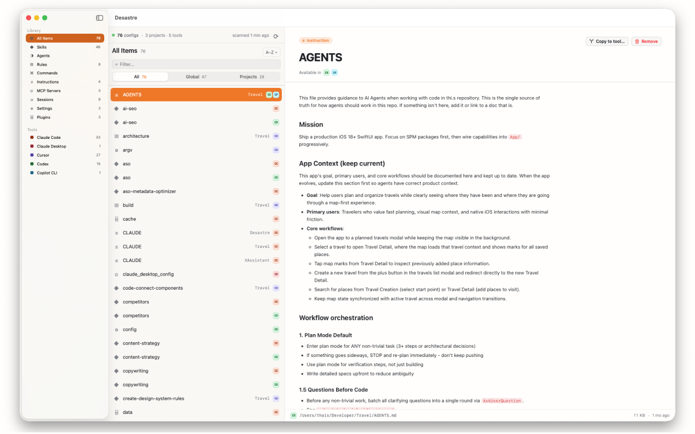

What is AGENTS.md?
AGENTS.md is a plain Markdown file at the root of a repository that gives AI coding agents project-specific instructions — build commands, conventions, architecture notes, things to never touch. It's an open standard under the Linux Foundation's Agent Rules umbrella, used in over 60,000 repositories, and read natively by Codex, Cursor, Windsurf, Aider, Amp, Augment, OpenCode, Continue, Cline, Roo Code and Zed.
Why it exists
Before AGENTS.md, every tool invented its own instruction file: Claude Code has CLAUDE.md, Copilot has copilot-instructions.md, Gemini has GEMINI.md, Cursor had .cursorrules. A team using three tools maintained three near-identical files that drifted apart. AGENTS.md is the truce: one open file that (almost) everyone reads.
Where it lives
- Project:
AGENTS.mdat the repo root. Some tools also readAGENTS.override.mdfor local overrides, and monorepos can nest additionalAGENTS.mdfiles in subdirectories — the closest one wins. - Global: conventions vary — Codex reads
~/.codex/AGENTS.md, while several tools (Cursor, Windsurf, Amp, Zed among them) look for~/AGENTS.mdin your home directory.
What goes in it
There's no required schema — it's Markdown for a very fast, very literal new teammate. The sections that earn their keep:
# AGENTS.md
## Setup
pnpm install && pnpm dev
## Conventions
- TypeScript strict mode; no `any`
- Tests colocated as *.test.ts — run with `pnpm test`
## Never
- Never edit generated files in src/gen/
- Never commit directly to mainWhich tools read which file
| Tool | Native instruction file |
|---|---|
| Codex, Cursor, Windsurf, Aider, Amp, Augment, OpenCode, Continue, Cline, Roo Code, Zed | AGENTS.md |
| Claude Code | CLAUDE.md (explained here) |
| GitHub Copilot | .github/copilot-instructions.md (explained here) — also reads AGENTS.md |
| Gemini CLI / Antigravity | GEMINI.md (explained here) |
The content of all four files is functionally identical — the difference is literally the filename. Which means keeping them in sync across tools is a renaming chore.
Track every instruction file you have
After a year of AI-assisted work, you'll have an AGENTS.md here, a CLAUDE.md there, and no idea which repos say what. Desastre scans your machine and lists every instruction file — AGENTS.md, CLAUDE.md, GEMINI.md, copilot-instructions.md — with the project it belongs to and every tool that can read it. Because AGENTS.md is multi-tool by design, Desastre tags each one with all matching tools instead of guessing.

And when a tool needs its own filename, the "Copy to tool…" button does the rename for you: a CLAUDE.md becomes an AGENTS.md for Codex, or vice versa, in one click — same content, correct filename, never overwriting an existing file.
Desastre — AI config manager for Mac
Every AGENTS.md, CLAUDE.md and GEMINI.md on your machine, in one window — with one-click conversion between them. $1.99, one time.
Download on the Mac App Store